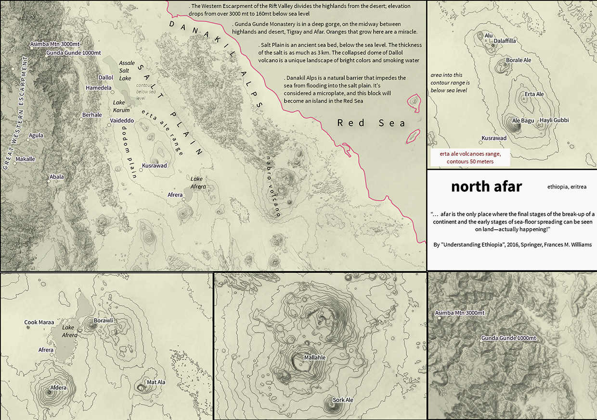
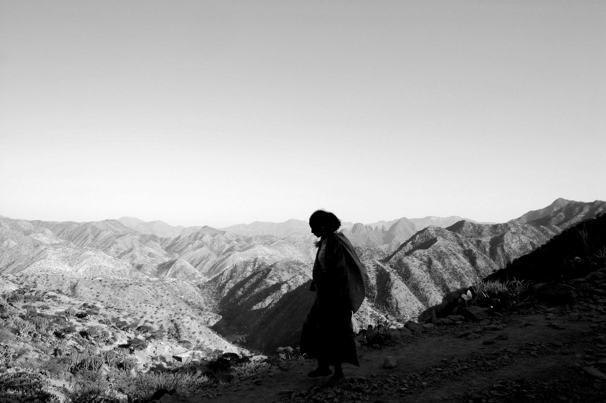
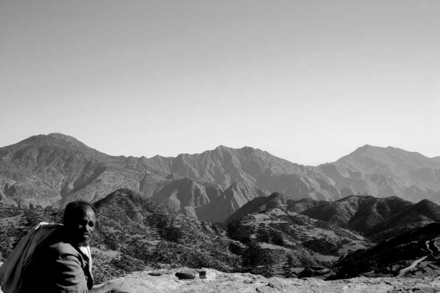
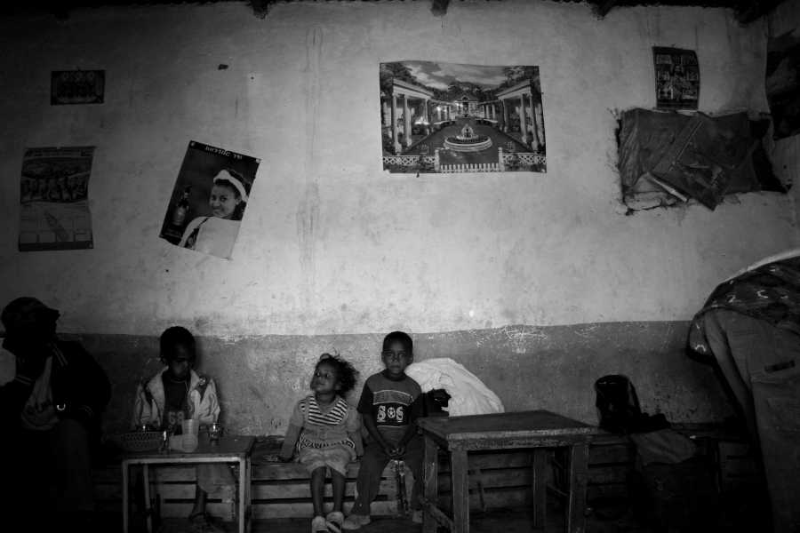

(Nigrizia settembre 2012 - qui il pdf)
Gunda Gunde, Irob, il "piccolo Tibet" d'Etiopia
In una profonda valle tra le highlands del Tigray e la depressione dell'Afar c'è un monastero inaccessibile che è stato rifugio di monaci eretici e di rivoluzionari
Testo, foto e cartografia di Fabio Artoni

Il villaggio di Geblen è in Agame, nel nord est del Tigray, vicino al confine con l’Eritrea. Poche case che si affacciano su una strada di polvere e sassi. Ci si arriva da Adigrat via Edaga Hamus. Guardando verso oriente ci sono montagne superbe. Cambiano di umore da mattina a sera: misteriose all’alba, di un biancore minaccioso a mezzogiorno, malinconiche al tramonto. Lo studioso d'Etiopia Paul Henze battezzo questa zona “piccolo Tibet”. Oltre quelle montagne comincia la grande depressione della Dancalia, che continua fino al mar rosso. Due cartelloni all’ingresso del paese ricordano che i terapeuti delle organizzazioni internazionali sperimentano da anni da queste parti un accanimento dello sviluppo dagli esiti incerti. Progetti per il recupero dell’acqua piovana, una cintura di sicurezza in caso di collasso alimentare, i villaggi del millennio. Piove molto pochi giorni all’anno e l’acqua si porta via il terreno buono. Taxi collettivi e autobus sono rari ma un paio di chilometri dopo Geblen e dove la strada finisce sta partendo un Isuzu. L’autista dorme abbracciando il volante. Tutto attorno muli, uomini e casse di banane, di papaie e pomodori. Frutta e ortaggi che arrivano dal villaggio di Gunda Gunde. Da questo spiazzo in cima a un’amba ancora non si vede ma è proprio là dove sale una gentile nebbiolina azzurra. Più o meno millecinquecento metri più in basso, in una gola dove scorre a intermittenza un torrente. Ci sono anche aranci e limoni laggiù, ma adesso ci sono solo le promesse dei fiori.
La gente dice che la frutta di Gunda Gunde è la best quality. La portano su dal villaggio corte carovane di muli. Finirà sulle bancarelle del mercato di Adigrat e con essa il nome di Gunda Gunde e dei suoi abitanti. Un tentativo di fuga da un anonimato che è la vita di milioni di contadini e pastori d’Etiopia. Oltre il Tigray il nome di Gunda Gunde dice poco o niente alla gente comune. Eppure, oltre alle arance, là c’è un monastero e una biblioteca di manoscritti dalla storia antica che raccontano del movimento religioso degli stefaniti.

Mappa del Nord Afar
In questa mappa dell'Afar si individuano quattro sezioni verticali, da sinistra verso destra:
.1 il "great western escarpment", la scapata occidentale della Rift Valley, a tremila metri di altezza;
.2 la profonda depressione dell'Afar, collassata fino a sotto il livello del mare, con catene vulcaniche attive e la piana del sale (salt plain) che quando le acque oceaniche sono evaporate ha lasciato uno strato di sale profondo tre chilometri;
.3 le alpi Dancale, che geologicamente fanno parte della placca continentale e sono una vera e propria barriera che impedisce al Mar Rosso di invadere la piana sotto il livello del mare
.4 e infine, più a est, il Mar Rosso.
Gunda Gunde, sulla mappa, è in alto a sinistra, tra altopiano e deserto. Ecco un ingrandimento:
Gunda Gunde è sul fondo di una valle dove scorre un torrente. E' proprio grazie al torrente, per quanto magro nella stagione secca, che in questa zona arida e impervia crescono le arance: le arance di Gunda Gunde.
Per arrivare a Gunda Gunde si parte dall'alto, dall'altopiano, e si scende per millecinquecento metri. Da lì in poi, per arrivare nel deserto dell'Afar, bisogna scendere per altri mille metri seguendo il letto del torrente, tra pareti a picco. Ma quella è zona di confine, "senza legge", un'area contigua a Tigray, Afar ed Eritrea
Nato alla fine del milletrecento nell’Agame, Estifanos viaggiò ma tornò a rifugiarsi da queste parti dopo che la sua interpretazione dei testi sacri gli rese la vita dura. Seguendo i precetti di Ewostatewos, anche Estifanos parlava di preghiera, di lavoro e condivisione dei frutti, di austerità, praticava la tolleranza anche con i musulmani, trovava strana la venerazione esasperata per la vergine Maria. Le piccole comunità di dodici monaci non potevano accettare regali e accumulare proprietà. Quello che andava oltre il bisogno quotidiano doveva essere distribuito ai poveri. Le “Cronache degli Stefaniti”, un documento del milleseicento, dicono che Estifanos arrivò in questo piccolo tibet ma che fu un suo successore e contemporaneo, Yeshaq, a fondare in quegli anni a Gunda Gunde una basilica dedicata alla vergine Maria.

Gli Irob trasportano in spalla o con carovane di muli i prodotti che arrivano da Gunda Gunde
Le famose chiese rupestri del Tigray sono scavate nella roccia, bisogna fare fatica per raggiungerle; sono là in alto, per provare a essere più vicini al cielo. Invece Maryam Gunda Gunde è in fondo a una gola claustrofobica, pareti a imbuto che danno le vertigini. I fedeli di Estifanos cercavano un posto sicuro per pregare e vivere dei frutti della terra. Qui trovarono un torrente che dava abbastanza acqua per coltivare mais, orzo e frutta. Nel 1444 Estifanos fu arrestato, torturato e poi rilasciato. Forse quello che più di tutto suonò indigesto fu il suo rifiuto di inchinarsi davanti all'Imperatore perché la prostrazione era un gesto dovuto soltanto a Dio. Impero e clero ortodosso d’Etiopia chiusero un occhio ma con l’altro non lo persero di vista. Tre anni dopo Estifanos finì bruciato in pubblico. Anche i monasteri degli stefaniti sperimentarono le fiamme arrabbiate del clero ortodosso prima che il movimento venisse riassorbito dall'ortodossia. Però ai tempi delle scorrerie dei musulmani di Amhed Gragn, nel milleseicento, che distrusse e depredò le chiese del Tigray, il monastero di Gunda Gunde se la cavò senza neppure un graffio delle pietre mattone della sua grande struttura rettangolare.Gli studiosi dicono che nella biblioteca di Gunda Gunde trovarono rifugio i manoscritti provenienti da altri monasteri della congregazione. Vangeli, storie bibliche e vite dei santi stefaniti soprattutto. E ricche miniature che hanno definito uno stile artistico: lo “stile Gunda Gunde ”. La Balicka riassume questo stile evidenziando le figure stilizzate con vestiti dai colori accesi, teste allungate a forma di pera, sopracciglia triangolari e bocche piccole. L’Istituto di Studi Etiopici possiede la raccolta più vasta ma il Walters Art Museum di Baltimora ha una copia molto ben conservata di Maria e il bambino con gli arcangeli Michele e Gabriele. Giustino De Jacobis si accorse di questa ricchezza nascosta tra gli aranci nella sua prima visita nel 1844 e Antonio Mordini contò ottocento documenti quando arrivò qui nel 1953.
In questa zona di confine tra Tigray e Afar, vive il gruppo etnico degli Irob, che ha per lingua madre una lingua tutta sua, il Saho
La storia difficile del monastero si intreccia con quella più recente. Ai tempi del Derg, Menghistu puntò il mirino sugli Irob di queste terre: i resettlement forzati nascosero sotto una vernice di emergenza alimentare il tentativo di portare via muscoli alla guerriglia tigrina. Ma i monaci vissero indisturbati. Paul Henze arrivò a Gunda Gunde dodici anni fa. Gli raccontarono che il premier Meles Zenawi, tigrino da venti anni al potere, fece nel monastero una riunione del Tplf, l’esercito di liberazione del Tigray. Per arrivare a Gunda Gunde, da Geblen, servono diverse ore di cammino. Per andare i miei garretti consumati ne hanno contate sei. Per tornare più di dieci. Ma è tutto molto relativo. La gente di queste parti dice che ci vogliono tre ore ad andare e quattro a tornare. Ma i bambini salivano glissando di sasso in sasso con voci da ottavino. Gente ben allenata può competere con gli Irob. Il rischio è che a fine viaggio di questa terra non rimanga che un record sul contapassi. Dandosi tempo ci si accorge delle tecniche per conservare il terreno arabile e per prenderne dalle montagne. È un vademecum di agronomia in ambiente estremo: terrazzamenti con base di pietre, barriere di cactus per impedire il pascolo, piccole dighe a cascata e sistemi di canalizzazione per quando c’è l’acqua. Come per i manoscritti, anche la vita di questi contadini merita il microscopio. Per capire come arrivare al prossimo raccolto e farcela ancora una volta. Fine febbraio è ancora tempo di abbondanza. Una casa rettangolare di pietra di un’unica grande stanza. Fuoco e fumo negli occhi e la farina d’orzo che prima si scioglie e poi si prende tutta l’acqua della pentola. Con i mesi che passano si comincia a sottrarre e aggiungere qualcosa di più povero. Al raccolto si arriva affilati come i corridori del tour de france all’ultima cronometro. Paul Henze chiamò questa zona, con montagne aspre, bianche e a profondamente erose, "Piccolo Tibet"
Più si scende verso Gunda Gunde e più la montagna è ripida e nuda. A valle si vedono i primi triangoli di terreno coltivato: mais, orzo, gli alberi da frutta, cipolle e pomodori. Quando la strada spiana si entra nel villaggio. La scuoletta in sassi sembra un rifugio alpino. Il cielo è ancora azzurro ma le case di pietra addossate alle pareti sono già in ombra. Vorrei pensare ai pascoli del cielo ma mi viene in mente buco nel muro, il rifugio di Butch Cassidy e di Sundance Kid.Un’altra ora e si arriva al monastero, camminando sul letto secco del torrente. Le foto scattate da Michael Gervers dell’Università di Toronto dieci anni fa (risorsa preziosa per gli studiosi su http://128.100.218.174:8080/ethiopia, password e username: student) davano un’immagine più ottimista. Ora ci sono meno costruzioni attorno al monastero e pali di sostegno dappertutto.
Paul Henze nel suo racconto parlava di un monaco dalla barba nera di nome Abba Lemlem. Il suo nome significa verdeggiante in amarico. La barba ora è bianca ma l’uomo è sempre lui. Vive nel monastero con un’altra decina di monaci e alcuni diaconi. Racconta di una vita semplice e abitudinaria. Dietro il monastero altre piante di banane e il profumo dei fiori di arancio. Si mangia insieme: besso, un impasto di farina d’orzo e spezie. Si lancia in bocca a spaglio ma ci vuole un po’ di pratica. E poi tè, banane piccole e dolcissime e miele bianco. La mattina ritrovo sopra la testa la nebbiolina azzurra. Fuori dal monastero due donne stanno pregando. Dentro non possono entrare. È una regola ma è capitato che qualche turista donna si travestisse da uomo.
Il sacrario è sormontato da una doppia arcata in stucco ma tra le porte non vedo i dipinti immortalati da Gervers. Però lì vicino c’è il poster di una madonna in azzurro cielo e un megafono. È servito per la grande celebrazione di fine gennaio. Arriva gente per la processione da tutto il Tigray e il letto del fiume diventa una distesa di bianche netelà, gli scialli dei giorni festa. Via le scarpe, un bacio veloce alla croce e il dito già pronto a regolare l’otturatore. Mi pentirò di non avere usato gli altri sensi: sentire sotto la pelle il velluto consumato dei drappi; ascoltare il kebaro, il tamburo per i canti liturgici; annusare l’incenso sparso dai monaci che poi spariscono dietro il maqdas, il sacrario inaccessibile che custodisce il tabot. 
Di ritorno da Gunda Gunde, nel villaggio di Geblen, nell'unica caffetteria